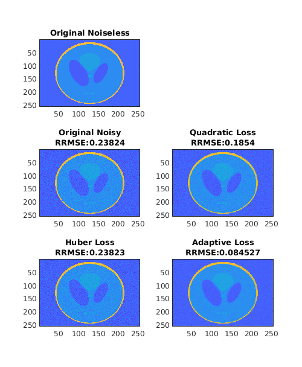
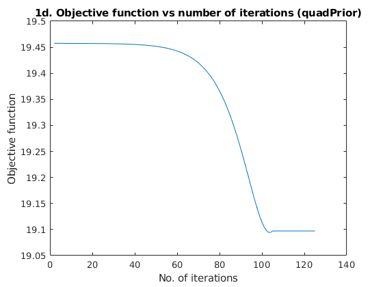
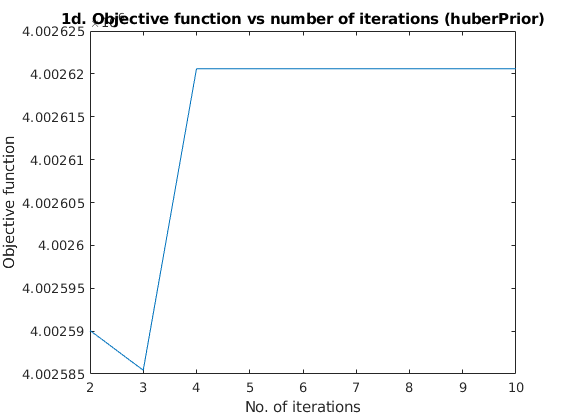
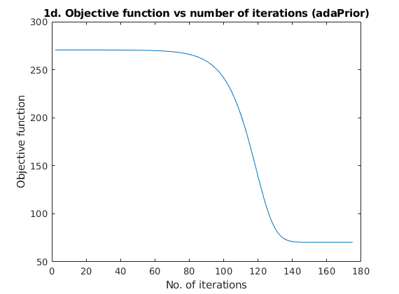
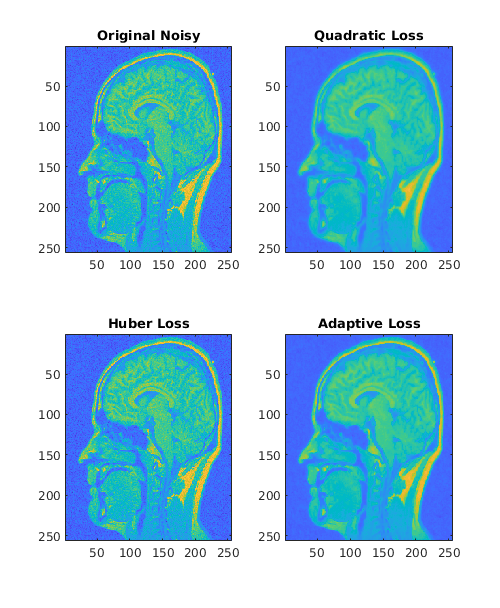
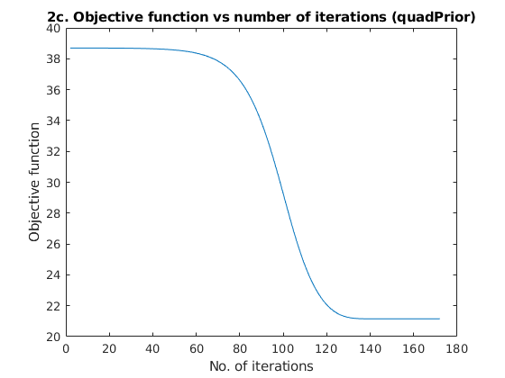
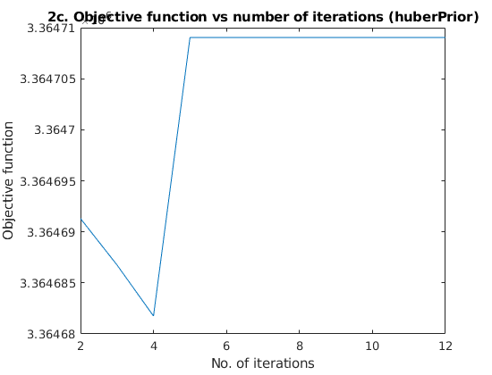
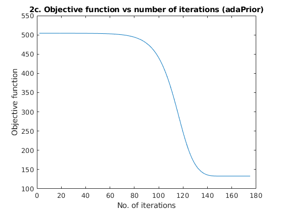

Assignment 2, Image Denoising
CS736: Medical Image Computing, IIT Bombay (Spring 2019) Dhruv Shah and Ansh Khurana
Contents
Images are de-noised using the maximum a-posteriori Bayesian image-denoising algorithm that uses a noise model coupled with a MRF prior that uses a 4 -neighbor neighborhood system
Implementation of potential function 'g' can be found in 'huberPrior.m', 'quadPrior' and 'adaPrior.m'.
clc; clear all; close all;
Question 1
load('../data/assignmentImageDenoisingPhantom.mat'); img = real(imageNoisy); iorg = imageNoiseless; % Part a. Initial_RRMSE = norm(iorg-img, 'fro')/norm(iorg, 'fro') % Part b. fprintf("The tuned parameters for quad prior: "); alpha_q = 0.29 fprintf("The tuned parameters for Huber prior: "); alpha_hu = 0.6 gamma_hu = 0.10 fprintf("The tuned parameters for Adaptive-Discontinuity prior: "); alpha_ada = 0.82 gamma_ada = 0.027 % Evidence of optimality: [x_rec_quad, logger_q] = gradDesc(img, img, 'quadPrior', alpha_q, 0.1); [x_rec_huber, logger_h] = gradDesc(img, img, 'huberPrior', alpha_hu, gamma_hu); [x_rec_ada, logger_a] = gradDesc(img, img, 'adaPrior', alpha_ada, gamma_ada); % For quad [quad_a1_2, d] = gradDesc(img, img, 'quadPrior', alpha_q*1.2, 0.1); [quad_a0_8, d] = gradDesc(img, img, 'quadPrior', alpha_q*0.8, 0.1); fprintf('%s\n', "RRMSE for optimal parameter a* (for quadPrior): " + num2str(norm(iorg-x_rec_quad, 'fro')/norm(iorg, 'fro'))); fprintf('%s\n', "RRMSE for 1.2a* (for quadPrior): " + num2str(norm(iorg-quad_a1_2, 'fro')/norm(iorg, 'fro'))); fprintf('%s\n', "RRMSE for 0.8a* (for quadPrior): " + num2str(norm(iorg-quad_a0_8, 'fro')/norm(iorg, 'fro'))); % For Huber [huber_a1_2, d] = gradDesc(img, img, 'huberPrior', alpha_hu*1.2, gamma_hu); [huber_a0_8, d] = gradDesc(img, img, 'huberPrior', alpha_hu*0.8, gamma_hu); [huber_b1_2, d] = gradDesc(img, img, 'huberPrior', alpha_hu, gamma_hu*1.2); [huber_b0_8, d] = gradDesc(img, img, 'huberPrior', alpha_hu, gamma_hu*0.8); fprintf('%s\n', "RRMSE for 1.2a*, b* (for huberPrior): " + num2str(norm(iorg-huber_a1_2, 'fro')/norm(iorg, 'fro'))); fprintf('%s\n', "RRMSE for 0.8a*, b* (for huberPrior): " + num2str(norm(iorg-huber_a0_8, 'fro')/norm(iorg, 'fro'))); fprintf('%s\n', "RRMSE for a*, 1.2b* (for huberPrior): " + num2str(norm(iorg-huber_b1_2, 'fro')/norm(iorg, 'fro'))); fprintf('%s\n', "RRMSE for a*, 0.8b* (for huberPrior): " + num2str(norm(iorg-huber_b0_8, 'fro')/norm(iorg, 'fro'))); % For ada [ada_a1_2, d] = gradDesc(img, img, 'adaPrior', alpha_ada*1.2, gamma_ada); [ada_a0_8, d] = gradDesc(img, img, 'adaPrior', alpha_ada*0.8, gamma_ada); [ada_b1_2, d] = gradDesc(img, img, 'adaPrior', alpha_ada, gamma_ada*1.2); [ada_b0_8, d] = gradDesc(img, img, 'adaPrior', alpha_ada, gamma_ada*0.8); fprintf('%s\n', "RRMSE for optimal parameters a*, b* (for adaPrior): " + num2str(norm(iorg-x_rec_huber, 'fro')/norm(iorg, 'fro'))); fprintf('%s\n', "RRMSE for 1.2a*, b* (for adaPrior): " + num2str(norm(iorg-ada_a1_2, 'fro')/norm(iorg, 'fro'))); fprintf('%s\n', "RRMSE for 0.8a*, b* (for adaPrior): " + num2str(norm(iorg-ada_a0_8, 'fro')/norm(iorg, 'fro'))); fprintf('%s\n', "RRMSE for a*, 1.2b* (for adaPrior): " + num2str(norm(iorg-ada_b1_2, 'fro')/norm(iorg, 'fro'))); fprintf('%s\n', "RRMSE for a*, 0.8b* (for adaPrior): " + num2str(norm(iorg-ada_b0_8, 'fro')/norm(iorg, 'fro'))); % Part c. figure('Position', [100, -50, 500, 700]); subplot(3, 2, 1); imagesc(iorg); caxis([-0.3, 1.3]); title('Original Noiseless') subplot(3, 2, 3); imagesc(img); caxis([-0.3, 1.3]); title({'Original Noisy', strcat('RRMSE: ', num2str(norm(iorg-img, 'fro')/norm(iorg, 'fro')))}); subplot(3, 2, 4); imagesc(x_rec_quad); caxis([-0.3, 1.3]); title({'Quadratic Loss', strcat('RRMSE: ', num2str(norm(iorg-x_rec_quad, 'fro')/norm(iorg, 'fro')))}); subplot(3, 2, 5); imagesc(x_rec_huber); caxis([-0.3, 1.3]); title({'Huber Loss', strcat('RRMSE: ', num2str(norm(iorg-x_rec_huber, 'fro')/norm(iorg, 'fro')))}); subplot(3, 2, 6); imagesc(x_rec_ada); caxis([-0.3, 1.3]); title({'Adaptive Loss', strcat('RRMSE: ', num2str(norm(iorg-x_rec_ada, 'fro')/norm(iorg, 'fro')))}); % Part d. figure; plot(logger_q(:, 1)); title("1d. Objective function vs number of iterations (quadPrior)"); ylabel("Objective function"); xlabel("No. of iterations"); figure; plot(logger_h(:, 1)); title("1d. Objective function vs number of iterations (huberPrior)"); ylabel("Objective function"); xlabel("No. of iterations"); figure; plot(logger_a(:, 1)); title("1d. Objective function vs number of iterations (adaPrior)"); ylabel("Objective function"); xlabel("No. of iterations");
Initial_RRMSE =
0.2382
The tuned parameters for quad prior:
alpha_q =
0.2900
The tuned parameters for Huber prior:
alpha_hu =
0.6000
gamma_hu =
0.1000
The tuned parameters for Adaptive-Discontinuity prior:
alpha_ada =
0.8200
gamma_ada =
0.0270
RRMSE for optimal parameter a* (for quadPrior): 0.1854
RRMSE for 1.2a* (for quadPrior): 0.21041
RRMSE for 0.8a* (for quadPrior): 0.23823
RRMSE for 1.2a*, b* (for huberPrior): 0.23823
RRMSE for 0.8a*, b* (for huberPrior): 0.23823
RRMSE for a*, 1.2b* (for huberPrior): 0.23823
RRMSE for a*, 0.8b* (for huberPrior): 0.23823
RRMSE for optimal parameters a*, b* (for adaPrior): 0.23823
RRMSE for 1.2a*, b* (for adaPrior): 0.1471
RRMSE for 0.8a*, b* (for adaPrior): 0.12447
RRMSE for a*, 1.2b* (for adaPrior): 0.086731
RRMSE for a*, 0.8b* (for adaPrior): 0.085032
    Question 2
load('../data/assignmentImageDenoisingBrainNoisy.mat'); img = real(imageNoisy); % Part a c_img = imag(imageNoisy); fprintf("The standard deviation of noise in real part is: "); std_r = sqrt(cov(img(:)')) fprintf("The standard deviation of noise in complex part is: "); std_c = sqrt(cov(c_img(:)')) % Part b. fprintf("The tuned parameters for quad prior: "); alpha_q = 0.59 fprintf("The tuned parameters for Huber prior: "); alpha_hu = 0.5 gamma_hu = 0.1375 fprintf("The tuned parameters for Adaptive-Discontinuity prior: "); alpha_ada = 0.8 gamma_ada = 0.05 [x_rec_quad, logger_q] = gradDesc(img, img, 'quadPrior', alpha_q, 0.1); [x_rec_huber, logger_h] = gradDesc(img, img, 'huberPrior', alpha_hu, gamma_hu); [x_rec_ada, logger_a] = gradDesc(img, img, 'adaPrior', alpha_ada, gamma_ada); figure('Position', [100, -50, 500, 700]); subplot(2, 2, 1); imagesc(img); caxis([-0.3, 1.3]); title({'Original Noisy'}); subplot(2, 2, 2); imagesc(x_rec_quad); caxis([-0.3, 1.3]); title({'Quadratic Loss'}); subplot(2, 2, 3); imagesc(x_rec_huber); caxis([-0.3, 1.3]); title({'Huber Loss'}); subplot(2, 2, 4); imagesc(x_rec_ada); caxis([-0.3, 1.3]); title({'Adaptive Loss'}); % Part c. figure; plot(logger_q(:, 1)); title("2c. Objective function vs number of iterations (quadPrior)"); ylabel("Objective function"); xlabel("No. of iterations"); figure; plot(logger_h(:, 1)); title("2c. Objective function vs number of iterations (huberPrior)"); ylabel("Objective function"); xlabel("No. of iterations"); figure; plot(logger_a(:, 1)); title("2c. Objective function vs number of iterations (adaPrior)"); ylabel("Objective function"); xlabel("No. of iterations");
The standard deviation of noise in real part is:
std_r =
0.2833
The standard deviation of noise in complex part is:
std_c =
0.0585
The tuned parameters for quad prior:
alpha_q =
0.5900
The tuned parameters for Huber prior:
alpha_hu =
0.5000
gamma_hu =
0.1375
The tuned parameters for Adaptive-Discontinuity prior:
alpha_ada =
0.8000
gamma_ada =
0.0500
   